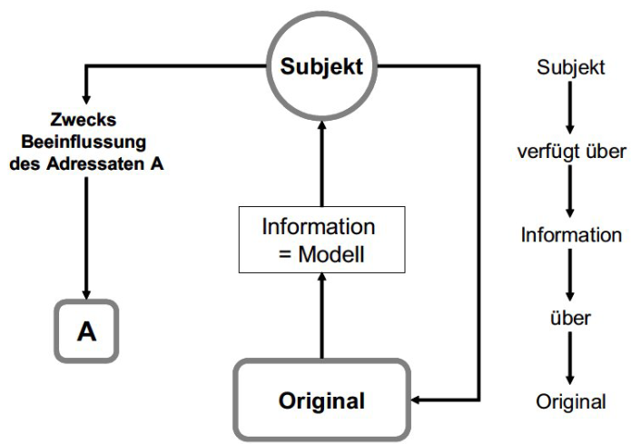
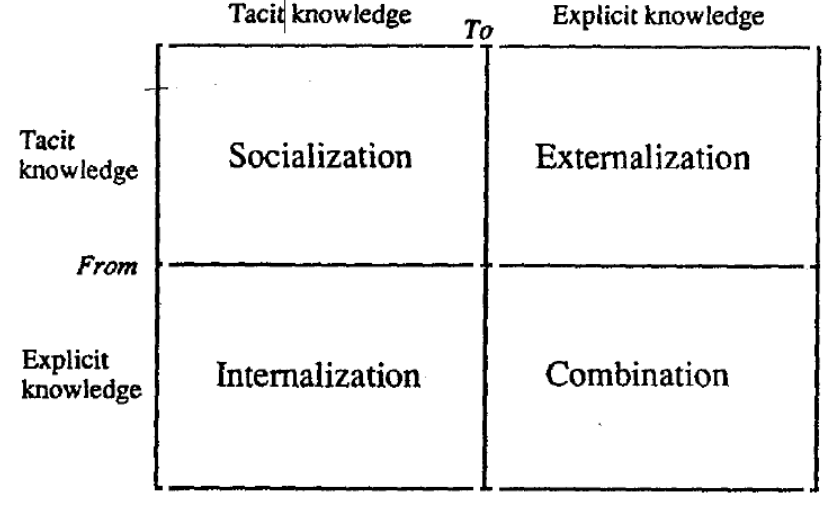
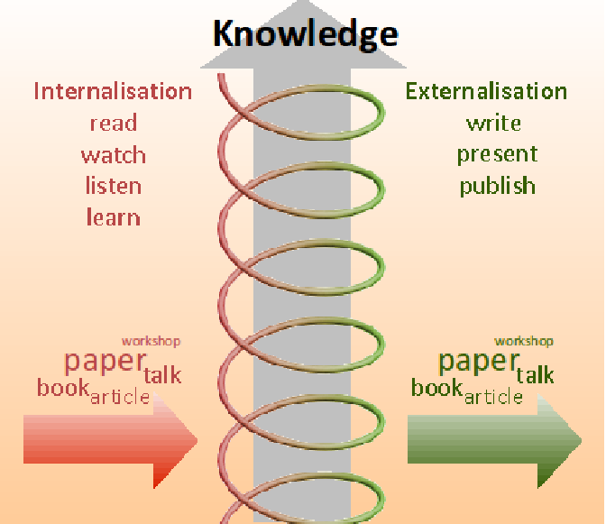
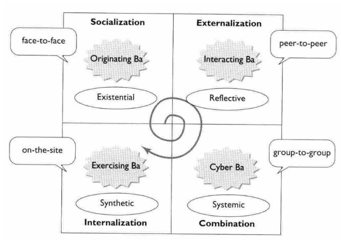
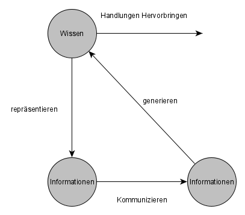
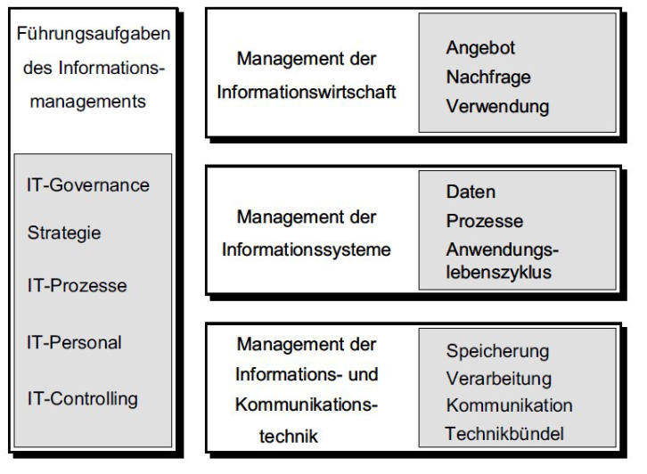

”Werden Zeichen einem Alphabet zugeordnet, kann man von Daten sprechen. Die Anreicherung mit zusätzlichem Kontext verschafft den Daten Bedeutung, so dass Information entsteht, bspw., darüber, dass mit 0,87 der Wert des Dollars in EUR gemeint ist.”
Definition Information
- Information ist ein immaterielles Modell eines Originals für Zwecke eines Subjekts (Erzeuger der Information). [Kretschmer]
- Information ist das Gut, aus welchem sich Wissen ergibt. Information ist ein Fluss von Nachrichten. [Nonaka]

Abb.: Modell wovon wozu für wen
Definition Wissen
- Wissen (knowledge) ist eine Mischung aus Erfahrungen, Werten, Einsichten und Kontextinformation, welche einen Rahmen für die Evaluierung und die Einordnung neuer Erfahrungen und Informationen bildet.
- Wissen entsteht und wird angewandt im Verstand (mind) von Wissenden. [DP98]
- Wissen ist die Summe aller Kenntnisse und Fähigkeiten, die Individuen oder Gruppen von Individuen nutzen können, um beobachtbare Handlungen hervorzubringen.
Explizites Wissen
Explizites Wissen (explicit or codified knowledge) ist Wissen, welches in eine formale, systematische Sprache übersetzt werden kann.
Stilles Wissen
Stilles Wissen (tacit knowledge) ist Wissen, das eine persönliche Qualität hat, welche seine Formalisierung und Kommunikation erschwert.
SECI-Modell
Das SECI-Modell beschreibt die Übergänge der einzelnen Wissensformen

Abb.: SECI-Modell nach Nonaka
Socialization
Stilles Wissen kann zwischen Individuen direkt durch Beobachtung (ohne Sprache) ausgetauscht werden. Z. B. ein Lehrling, der durch Beobachtung, Nachahmung und Übung lernt.
Externalization
Stilles Wissen wird in explizites Wissen umgewandelt.
Combination
Austausch von Wissen durch Meetings, Telefongespräche etc. Durch diesen Austausch und die Kombination von explizitem Wissen kann neues Wissen entstehen.
Internalization
Explizites wissen wird in stilles Wissen umgewandelt (lernen).
TODO Beispiele
Wissensspirale
Wenn Wissen von Individuen und größer werdenden Gruppen durch alle vier Arten der Wissenserzeugung geht, erhalten wir die Wissensspirale:

Abb.: Wissensspirale
Concept of Ba
Ba ist ein gemeiunsamer Raum, um Beziehungen zu schaffen
physisch: Büroräume
virtuell: Web oder Telefonkonferenz

Abb.: SECI-Modell angepasst an das Concept of Ba
Originating Ba
Individuen teilen Gefühle, Erfahrungen. Vision und Kultur.
Interacting Ba
Auswahl von Mitarbeitern mit den richtigen Fähigkeiten für ein Team.
Cyber Ba
Kollaborative Umgebungen (IT).
Exercising Ba
Training mit Mentoren. Training on the Job.
Definition Kognition
Kognition: Sammelbegriff für alle Prozesse und Strukturen, die mit dem Wahrnehmen und Erkennen zusammenhängen (Denken, Erinnerung, Vorstellen, Gedächtnis, Lernen, Planen u. a.).
Lernzyklus nach dem Münchener Modell

Abb.: Lernzyklus nach dem Münchener Modell
Wissensmanagement
Wissensmanagement ist eine Managementaufgabe, die darauf abzielt, den Lernzyklus von Individuen oder Gruppen von Individuen zu fördern.
- Will man in einer großen Organisation Wissen finden, so ist das nach unserer Definition gleichbedeutend mit dem Finden von Experten.
- Dies kann man mit Kollaborationsplattformen bzw. sozialen Netzwerken erreichen.
Informationsmanagement
Informationsmanagement (IM) ist das Management der Informationswirtschaft, der Informationssysteme, der Informations- und Kommunikationstechniken sowie der übergreifenden Führungsaufgaben.
• Das Ziel des IM ist es, im Hinblick auf die Unternehmensziele den bestmöglichen Einsatz der Ressource Information zu gewährleisten.
• IM ist sowohl Management- wie Technikdisziplin und gehört zu den elementaren Bestandteilen der Unternehmensführung.” [Krc15]

Modell des IM
Personalmanagement
Unter Personalmanagement versteht man die Gesamtheit der mitarbeiterbezogenen Gestaltungs- und Verwaltungsaufgaben im Unternehmen.
Personalbedarfsplanung
Welche und wie viele Arbeitskräfte werden in Zukunft benötigt? Vergleich mit aktuellem Bestand.
Personalbeschaffung
Reicht das bestehende Personal nicht aus bzw. lässt sich dieses nicht weiterentwickeln, so muss neues Personal beschafft werden. Themen: Personalmarketing, Personalauswahl, interne und externe Personalrekrutierung.
Personaleinsatz und -verwaltung
den Arbeitskräftepool möglichst effizient alloziieren, d.h. die richtigen (qualitativ und quantitativ) Mitarbeiter am richtigen Ort und zur richtigen Zeit vorzuhalten.
... dient zum einen dazu, die qualifikatorische Einsetzbarkeit der Mitarbeiter im Kontext einer sich permanent ver ̈andernden Arbeitswelt sicherzustellen. Zum anderen hilft gezielte Personalförderung, den Bedarf an Fach- und Führungskräften im Unternehmen zu decken
Personalabbau
Die Ursachen für den Abbau von Personal können zum einen individuell im Mitarbeiter begründet, zum anderen in allgemeinen, vom Unternehmen oder dessen Umwelt ausgehenden Änderungen liegen
Personalcontrolling
Erfolgsorientierte Steuerung und Kontrolle des Personaleinsatzes als separater Teil des Unternehmenscontrollings
Definition Wissensbarriere
Eine Wissensbarriere ist ein Sachverhalt, der dazu führt, dass der individuelle oder organisationale Lernzyklus gestört wird.
Wissensbilanz
Human-Kapital
Kompetenzen, Fertigkeiten und Verhaltensweisen der einzelnen Mitarbeiter. Bsp.: Mitarbeiterqualifikation, Mitarbeitererfahrung, Soziale Kompetenz
Struktur-Kapital
Strukturen die Mitarbeiter einsetzen, um in ihrer Gesamtheit die Geschäftst ̈atigkeit durchzuführen, also um produktiv und innovativ zu sein. Bsp.: Unternehmenskultur, Informationstechnik, Wissenstransfer
Beziehungs-Kapital
Alle Beziehungen zu externen Gruppen und Personen, die in der Gesch ̈aftst ̈atigkeit genutzt werden (k ̈onnen). Bsp.: Beziehungen zu Kunden, Lieferanten und Investoren